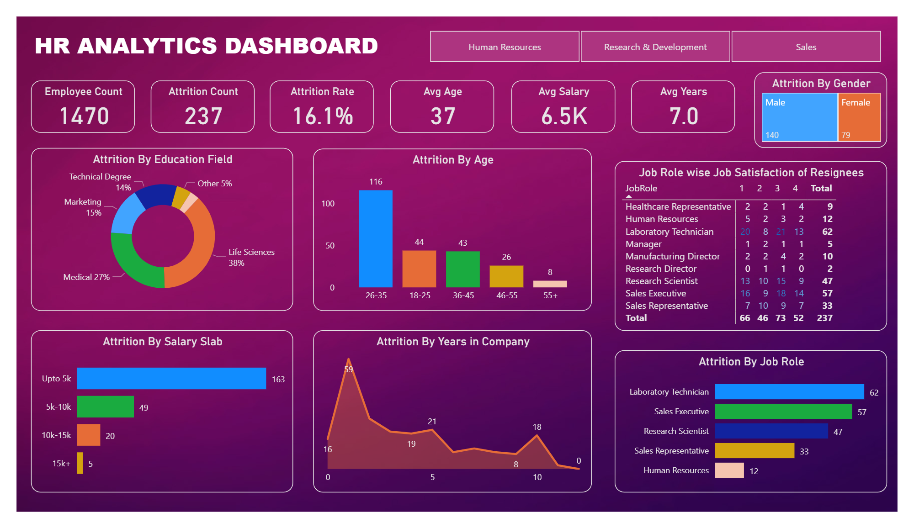

Power BI HR Data Analysis
The dataset used in this HR data analytics dashboard pertains to an organization's workforce. This dataset serves as a valuable resource for conducting comprehensive analytics to optimize HR strategies and improve employee performance and employee retention.
GOAL
The goal is to help an organization to improve employee performance and employee retention by creating a HR Analytics dashboard.
INSIGHTS
- The attrition rate is notably high in the Life Sciences field
- Employees aged between 26 to 35 exhibit a higher attrition rate
- Employees with salaries below the average have higher resignation tendency
- A noteworthy trend is the increased likelihood of employees leaving after completing one year of service, suggesting potential areas for improvement in the early phases of employment
CONCLUSION
- Targeted Retention Strategies for Life Sciences: Implement specific retention measures tailored to the unique challenges within the Life Sciences field, addressing factors that contribute to the elevated attrition rate.
- Focused Efforts for Age Group 26-35: Devote attention to the professional development, engagement, and well-being of employees aged 26 to 35, recognizing their higher likelihood of attrition.
- Salary Adjustment and Communication: Consider reviewing and adjusting salaries below the average to align with industry standards, accompanied by transparent communication about the organization's commitment to fair compensation.
- Enhanced Onboarding and First-Year Experience: Strengthen onboarding programs and support structures to improve the experience of employees during their first year, with the goal of reducing attrition during this critical period.
By addressing these specific areas, the organization can formulate a comprehensive strategy to mitigate employee attrition and foster a more stable and satisfied workforce.